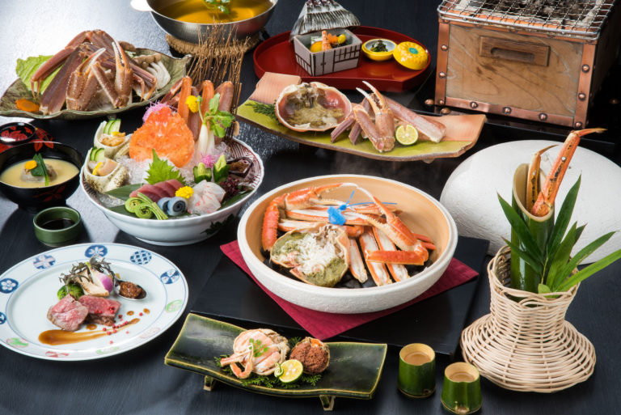
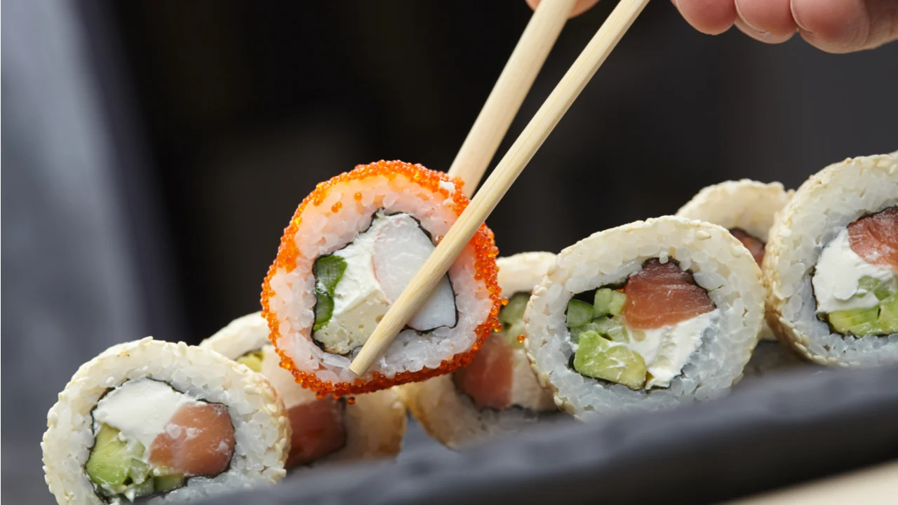
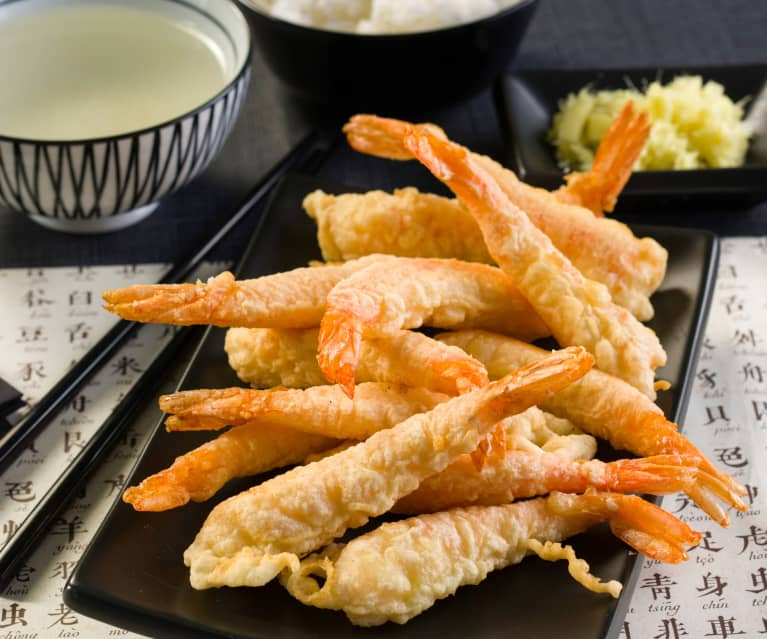
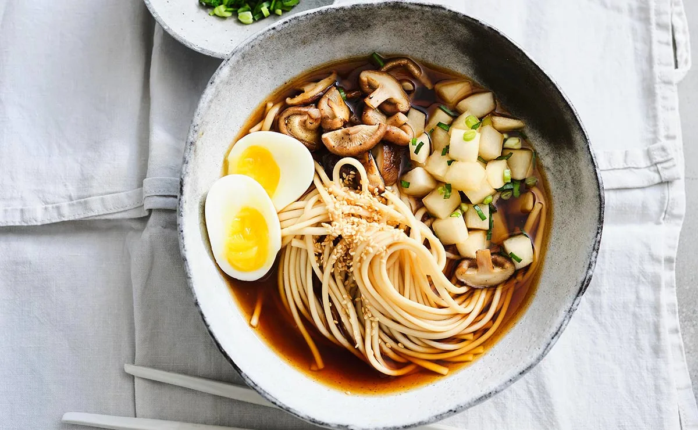
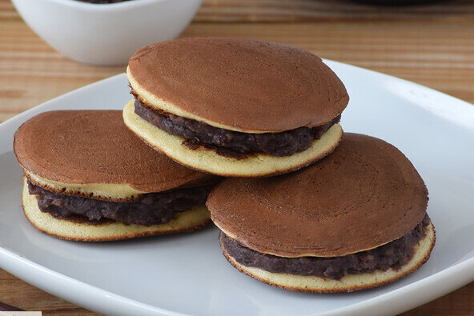
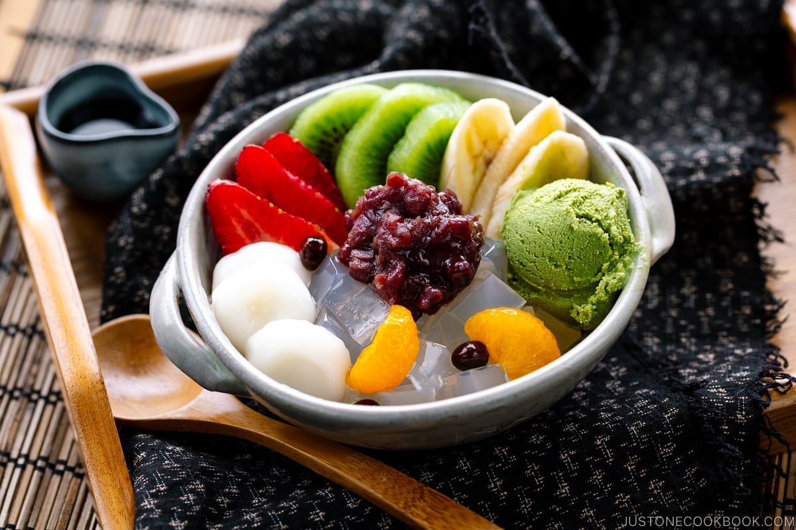

Gastronomía Japonesa
Japón tiene una cultura culinaria sana y sofisticada, que refleja la cultura del país. La gastronomía japonesa tiene una larga y rica historia que se remonta a miles de años. La cocina ha sido moldeada por diversos factores como la geografía, el clima, la religión y la cultura. El uso de arroz, pescado y salsa de soja ha sido una parte fundamental de la cocina japonesa desde la antigüedad. A lo largo de los años, la gastronomía japonesa ha evolucionado y se ha desarrollado en varias cocinas regionales, cada una con sus propios ingredientes y técnicas culinarias. La cocina japonesa se ha hecho cada vez más popular en todo el mundo por su énfasis en los ingredientes frescos y de temporada, el uso mínimo de aceite y grasas, y su presentación estética. Hoy en día, la gastronomía japonesa sigue influyendo e inspirando a chefs y amantes de la cocina de todo el mundo.
Platos típicos
-
Sushi
El sushi es un plato tradicional japonés que consiste en arroz sazonado y avinagrado servido con diversos ingredientes, normalmente marisco o verduras. El arroz suele envolverse en una hoja de alga llamada nori y puede acompañarse de salsa de soja, wasabi y jengibre encurtido. Es muy popular en todo el mundo.
-
Ramen

El ramen es un plato japonés que consiste en fideos de trigo al estilo chino servidos en un caldo a base de carne o pescado. Es un plato popular y muy apreciado en Japón, y también ha ganado reconocimiento todo el mundo. A menudo se disfruta como una comida reconfortante y saciante, se puede encontrar en una variedad de estilos y variaciones regionales en todo Japón.
-
Tempura
La tempura es un plato popular japonés que consiste en marisco o verduras rebozados y fritos. Suele servirse como guarnición o parte de una comida más copiosa, y se disfruta por su textura crujiente y su sabroso sabor.
-
Sashimi

El sashimi es un plato de pescado o marisco fresco crudo cortado en lonchas finas y servido sin arroz. Suele considerarse un manjar y se sirve con salsa de soja, wasabi y jengibre rallado. Puede elaborarse con una gran variedad de pescados y mariscos, y su calidad se juzga por su frescura, textura y aspecto.
-
Udon
El udon es un plato japonés de fideos gruesos de trigo servidos en un sabroso caldo, a menudo condimentado con salsa de soja y mirin. Es un plato reconfortante muy popular en Japón y se puede degustar con una gran variedad de ingredientes, como tempura, verduras y carne.
Postres
-
Mochi

El mochi es un pastel de arroz pegajoso que se elabora machacando arroz glutinoso cocido al vapor. Es un dulce tradicional japonés suele comerse durante el Año Nuevo. El mochi puede rellenarse con diversos ingredientes, como pasta de judías dulces, helado o fruta, y se come de muchas formas distintas.
-
Dorayaki
El dorayaki es un dulce japonés que consiste en dos pequeñas tortitas rellenas de pasta dulce de judías rojas. La textura suave y esponjosa de las empanadillas, cocida con el relleno dulce, hace del dorayaki un bocado delicioso y satisfactorio.
-
Anmitsu
El anmitsu es un postre tradicional japonés hecho de pequeños cubos de gelatina de agar, pasta dulce de judías azuki, diversas frutas y un sirope llamado mitsu. Suele servirse frío y es un postre refrescante en los calurosos veranos japoneses. También se puede tomar con una bola de helado o leche condensada por encima. Es un postre popular que puede encontrarse en muchos restaurantes y tiendas de postres japoneses.